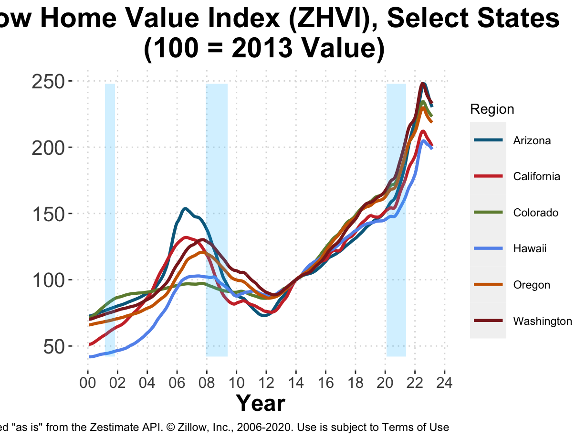
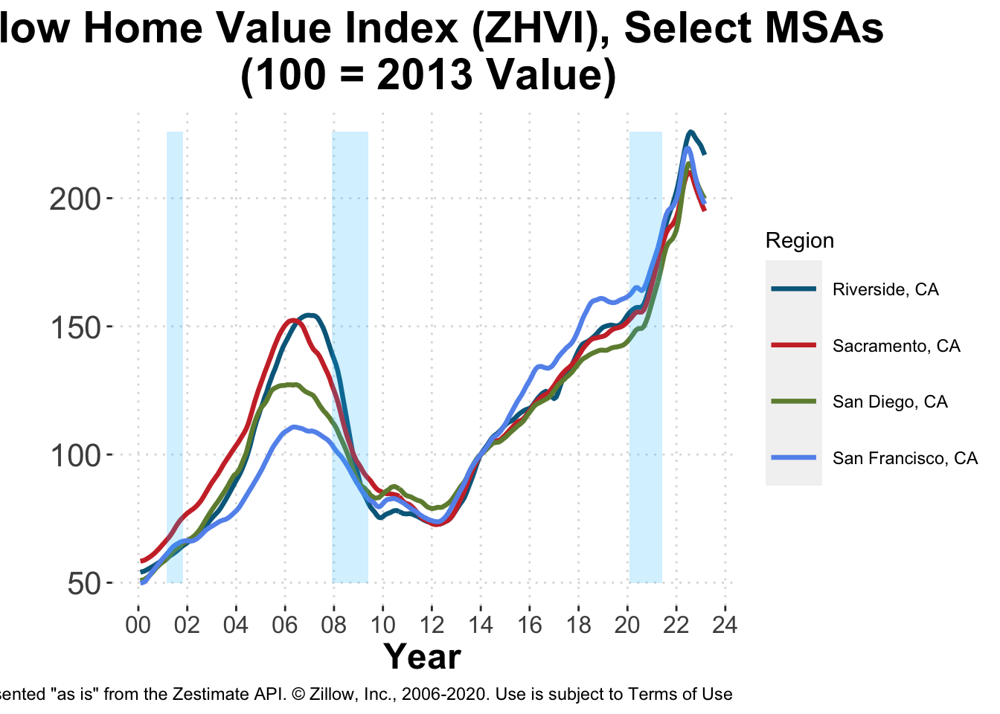
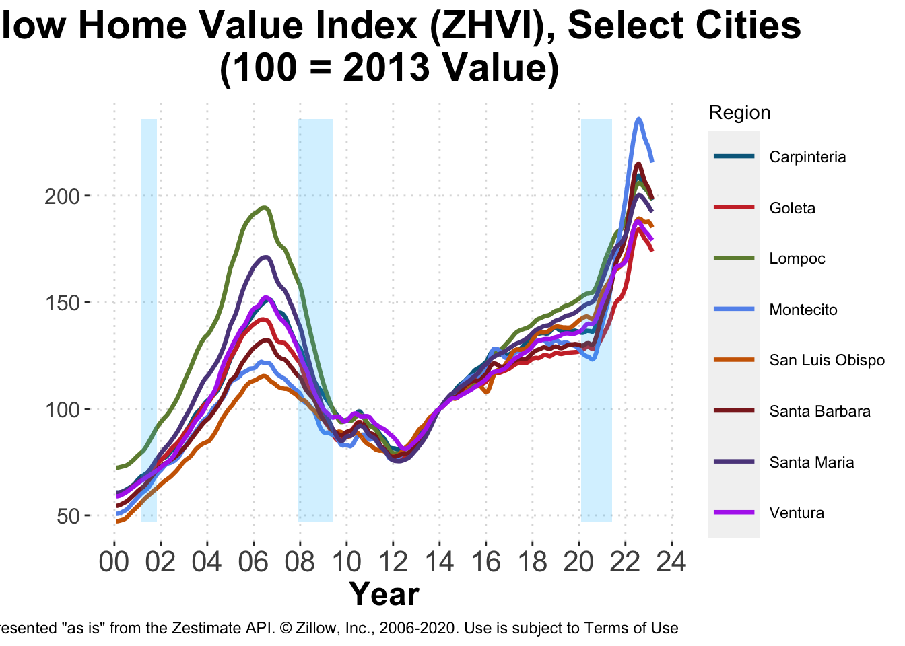

2 Real Estate
2.1 Zillow Home Value Index
One of the hallmarks of the Great Recession was its profound effect on housing markets nationwide. Since then the health of these markets have garnered significant attention and has been used as an indicator of potential future downturns. Since the downturn, most housing markets in the Western United States have, in fact, recovered. Colorado has seen exceptional growth and is now 60% higher than its pre-recession peak.

The recovery of the California housing market is reflected across much of the state. Overall, Californian homes are worth $547,400, roughly 1% above their pre-recession peaks. Over the metropolitan areas shown below, Los Angeles, San Francisco, and San Diego have seen the largest recovery.

Within Santa Barbara County, Santa Barbara City and Montecito have both more than recovered from the Great Recession. Many of the others, however, remain below.

The slowdown in growth of the California housing market has also been felt by Santa Barbara County’s cities. Save for recent trends in Goleta, many other cities have seen a slow decline in the growth of home values.
## Warning: Removed 96 row(s) containing missing values (geom_path).
2.2 Santa Barbara County Recorder’s Data
| Month | Count | Avg Sales Price | Avg Price Change | Median Price | Median Price Change |
|---|---|---|---|---|---|
| Dec 2022 | 87 | $3,405,023 | 73.5% | $1,500,000 | 8.7% |
| Dec 2021 | 151 | $1,962,858 | 3.4% | $1,380,000 | 18.7% |
| Dec 2020 | 241 | $1,897,460 | 21.7% | $1,162,500 | 8.5% |
| Dec 2019 | 184 | $1,559,247 | 12.2% | $1,071,500 | 7.1% |
| Dec 2018 | 147 | $1,389,969 | -2.7% | $1,000,000 | 3.2% |
| Month | Count | Avg Sales Price | Avg Price Change | Median Price | Median Price Change |
|---|---|---|---|---|---|
| Jan-Dec 2022 | 1572 | $2,509,851 | NA% | $1,581,000 | NA% |
| Jan-Dec 2021 | 2378 | $ NA | NA% | $ NA | NA% |
| Jan-Dec 2020 | 2225 | $1,837,820 | 23.4% | $1,152,000 | 15.2% |
| Jan-Dec 2019 | 2013 | $1,488,894 | 9% | $1,000,000 | 5.2% |
| Jan-Dec 2018 | 1896 | $1,365,503 | 0.7% | $ 950,750 | 2.8% |
| Month | Count | Avg Sales Price | Avg Price Change | Median Price | Median Price Change |
|---|---|---|---|---|---|
| Dec 2022 | 119 | $922,034 | 47.8% | $527,000 | -1% |
| Dec 2021 | 234 | $623,925 | 2.3% | $532,500 | 9.2% |
| Dec 2020 | 244 | $609,672 | 25.3% | $487,750 | 20.7% |
| Dec 2019 | 233 | $486,742 | 14.2% | $404,000 | 9.8% |
| Dec 2018 | 154 | $426,065 | -1.3% | $368,000 | -3.8% |
| Month | Count | Avg Sales Price | Avg Price Change | Median Price | Median Price Change |
|---|---|---|---|---|---|
| Jan-Dec 2022 | 2181 | $704,444 | NA% | $565,000 | NA% |
| Jan-Dec 2021 | 2788 | $ NA | NA% | $ NA | NA% |
| Jan-Dec 2020 | 2585 | $548,193 | 15.8% | $445,000 | 11.2% |
| Jan-Dec 2019 | 2565 | $473,272 | 3.2% | $400,000 | 3.4% |
| Jan-Dec 2018 | 2563 | $458,576 | 3.6% | $387,000 | 4% |